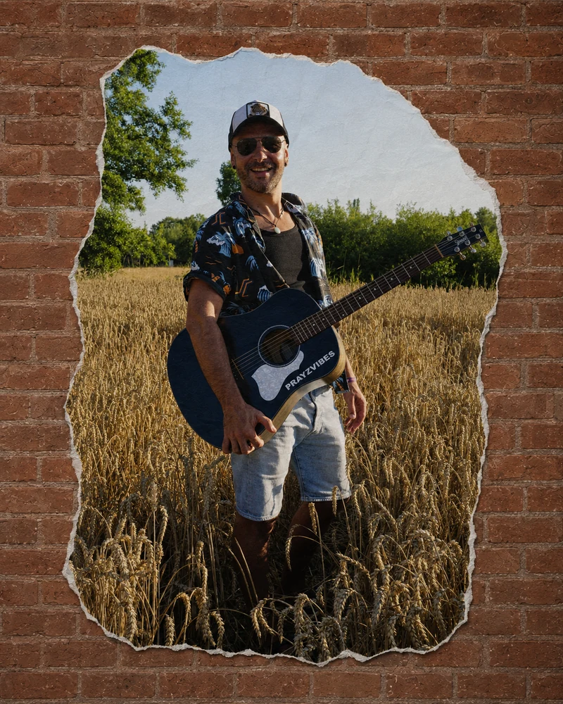

Curator feature · KIMU
Mountain Day
A track-focused feature on landscape, arrangement and the change of perspective at the heart of the song.
Read the featureTJPL News Magazine · Issue 45
PRAYZVIBES is one of several artists in Issue 45, with a feature on Mountain Day.

SEE CLEARLY
Paid partner feature
“PRAYZVIBES climbs above the surrounding noise in search of a different perspective on ‘Mountain Day’.”
Tamara Jenna · TJPL News Magazine · Issue 45
This is paid partner content, as labelled by TJPL. The complete issue is available from TJPL.
Independent coverage
These links are independent articles, kept distinct from the paid TJPL placement.
Curator feature · KIMU
A track-focused feature on landscape, arrangement and the change of perspective at the heart of the song.
Read the featureEP review · AVOLA
An independent review of the four-song chapter and the meaning found in what passes.
Read the review